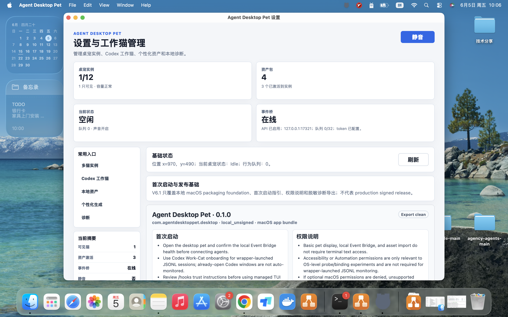
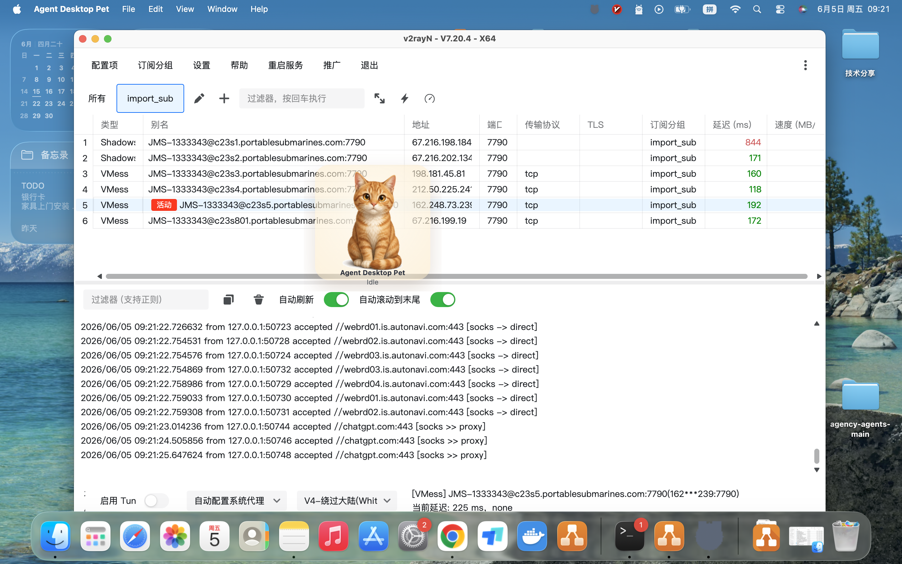
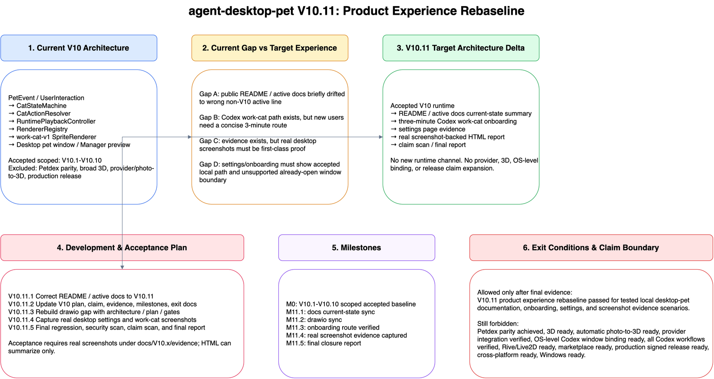

V10.11 Product Experience Rebaseline
本页汇总 V10.11 文档、onboarding、设置页和截图证据。它只证明 tested local desktop-pet product experience rebaseline，不扩大到 Petdex parity、 broad 3D、provider/photo-to-3D 或 production release readiness。
当前阶段
V10.11 active product-experience rebaseline。
核心基线
V10.1-V10.10 scoped accepted animated 2D work-cat。
推荐 Codex 路径
wrapper-launched
codex exec --json JSONL monitor。



Allowed Claim After Acceptance
V10.11 product experience rebaseline passed for tested local desktop-pet documentation, onboarding, settings, and screenshot evidence scenarios.